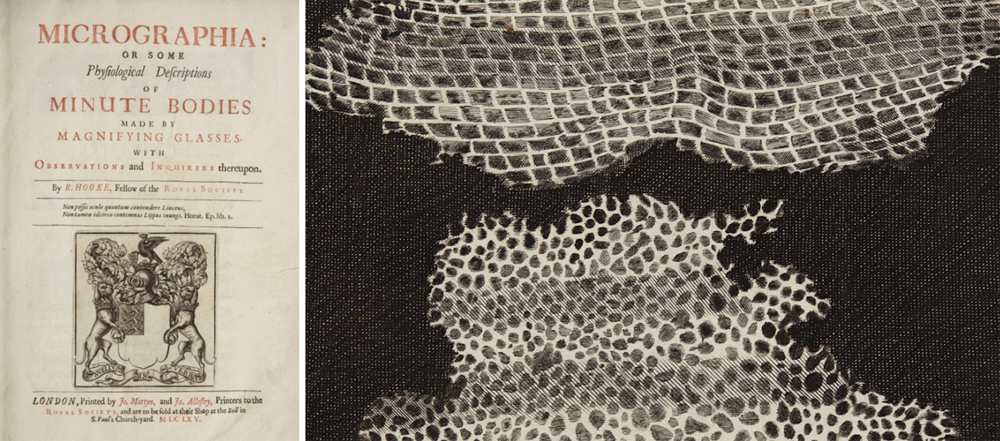
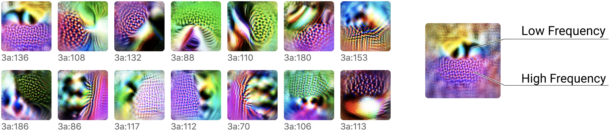
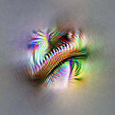

本文是 线程：电路 的一部分，该专题以实验性形式汇集了受邀的短文和批判性评论，深入探讨神经网络的内部工作机制。
电路专题
InceptionV1 早期视觉概述
<h2 id="introduction">引言</h2>
科学史上许多重要的转折点，都发生在科学“放大观察”的时刻。在这些时刻，我们开发出某种可视化工具或仪器，让我们能以全新的细节层次看待世界，于是诞生了一个新的科学领域，通过这个视角来研究世界。
例如，显微镜让我们看到了细胞，从而诞生了细胞生物学。科学放大了观察。包括 X 射线晶体学在内的多种技术让我们看到了 DNA，推动了分子生物学革命。科学再次放大了观察。原子理论、亚原子粒子、神经科学……科学一次次地放大了观察。
这些转变不仅仅是精度上的提升，更是科学研究对象发生了质的变化。例如，细胞生物学绝非只是更细致的动物学，而是一种全新的探究方式，极大地拓展了我们的理解范围。
这一现象的著名例子大多发生在非常宏观的尺度上，但它也可以是某个小型研究群体意识到，他们现在能够以更精细的粒度来研究自己的课题。

正如早期的显微镜暗示了一个由细胞和微生物构成的新世界，对人工神经网络的可视化也揭示出模型内部存在一个丰富内在世界的诱人线索和片段（例如 DeepDream）。这让我们不禁思考：深度学习是否正处于一个类似（尽管规模更小）的转折点？
大多数可解释性工作旨在为整个神经网络的行为提供简单解释。但如果我们采用受神经科学或细胞生物学启发的方法——一种“放大观察”的方法呢？如果我们认为单个神经元、甚至单个权重都值得认真研究呢？如果我们愿意花费数千小时来追踪每一个神经元及其连接呢？会浮现出怎样的神经网络图景？
与通常将神经网络视为黑箱的看法相反，我们惊讶地发现，在这个尺度上网络其实非常易于接近。不仅神经元似乎是可以理解的（即使是那些最初看起来难以捉摸的），神经元之间连接形成的“电路”也似乎是对应于世界事实的有意义算法。你可以看到一个圆形检测器如何由曲线组装而成。你可以看到一个狗头如何由眼睛、鼻子、毛发和舌头组装而成。你可以观察一辆汽车如何由车轮和窗户组成。你甚至能找到实现简单逻辑的电路：网络在高级视觉特征上实现 AND、OR 或 XOR 的情况。
<p>正如早期的显微镜暗示了一个由细胞和微生物构成的新世界，对人工神经网络的可视化也揭示出模型内部存在一个丰富内在世界的诱人线索和片段（例如 <d-cite bibtex-key='karpathy2015visualizing,erhan2009visualizing,olah2017feature,simonyan2013deep,nguyen2015deep,mordvintsev2015inceptionism,nguyen2016plug,zeiler2014visualizing,fong2017interpretable,kindermans2017patternnet,reif2019visualizing,carter2019activation'></d-cite>）。 </p> <p>这让我们不禁思考：深度学习是否正处于一个类似的转折点？是否存在一种类似于细胞生物学或神经科学的深度学习研究方法？如果存在，这种深度学习可解释性方法会是什么样子？它的研究对象是什么，对它们进行严谨探究又意味着什么？</p>
这篇导论性文章对我们的思考进行了高层次概述，并介绍了一些我们在这一研究方向中发现的有用工作原则。在后续文章中，我们和合作者将发表对这个内在世界的详细探索。
但事实是，我们对单个视觉模型的理解才刚刚触及皮毛。如果你对这些问题产生共鸣，欢迎加入我们和合作者的 Circuits 项目——一个在 Distill Slack 上举办的开放科学研究合作。
三个推测性主张
现代细胞理论的最早表述之一，是 Theodor Schwann（你可能因 Schwann 细胞而知道他）在 1839 年提出的三个主张：

前两个主张如今很可能已经耳熟能详，并在现代细胞理论中延续下来。第三个主张则可能不太为人所知，因为它后来被证明是严重错误的。
我们相信，清晰阐述一个自己认为可能是正确的强版本主张是有价值的，即使它可能像 Schwann 的第三个主张那样最终被证伪。本着这种精神，我们提出关于神经网络的三个主张。它们既是关于神经网络本质的经验性主张，也是关于如何有效地理解它们的规范性主张。

这些主张是刻意具有推测性的。它们也并非完全新颖：类似于 (1) 和 (3) 的主张之前已被提出，我们将在下文中更深入地讨论。
但我们认为这些主张值得认真考虑，因为如果它们为真，就可能奠定一个新的“放大观察”可解释性领域的基础。在接下来的章节中，我们将逐一讨论每个主张，并展示让我们相信它们可能成立的一些证据。
主张 1：特征
特征是神经网络的基本单元。它们对应于方向，可以被严谨地研究和理解。
我们相信神经网络由有意义、可理解的特征组成。早期层包含边缘或曲线检测器之类的特征，而较晚的层则有松软耳朵检测器或车轮检测器之类的特征。学术界对这一点是否成立存在分歧。虽然许多研究者认为有意义神经元的存在几乎是理所当然的事实——甚至有一个小型文献专门研究它们——但也有许多人持深度怀疑态度，认为过去那些看似追踪有意义潜在变量的神经元其实是被误解了。[3] 尽管如此，数千小时对单个神经元的仔细研究使我们相信，典型情况是神经元（或在某些情况下，神经元激活向量空间中的其他方向）是可以理解的。
当然，可以理解并不意味着简单或容易理解。许多神经元一开始都很神秘，并不符合我们先验猜测可能存在的特征！然而，我们的经验是，这些神经元背后通常都有一个简单的解释，而且它们实际上在做一些非常自然的事情。例如，我们最初对高-低频检测器（下文讨论）感到困惑，但事后看来，它们既简单又优雅。
这篇导论文章只会概述几个我们认为具有代表性的例子，但后续将既有对单个特征的深入剖析，也会有对我们所理解的所有特征的广泛概述。我们目前将以 InceptionV1 为例，但相信这些主张具有普遍性，并将在最后一节“普适性”中讨论其他模型。
不管我们关于有意义特征的判断是正确还是错误，我们都认为这是社区需要解决的一个重要问题。我们希望引入几个经过仔细研究的、看似可理解的特征具体例子，能有助于推动这一对话。
例子 1：曲线检测器
在我们仔细检查过的每一个非平凡视觉模型中，都能找到曲线检测神经元。这些单元很有趣，因为它们恰好处于社区广泛认可存在的特征（例如边缘检测器）和存在显著怀疑的特征（例如耳朵、汽车、面部等高级特征）之间的边界上。
我们将重点关注 InceptionV1早期视觉概览 层中的曲线检测器，这是 InceptionV1 的一个早期层。这些单元对半径约 60 像素的曲线和边界有反应。它们还会因曲线边界附近的垂直线而略微额外兴奋，并且更喜欢曲线的两侧是不同颜色。
曲线检测器以家族形式出现，家族中的每个成员在不同方向上检测相同的曲线特征。它们共同覆盖了所有方向范围。
区分曲线检测器与其他表面上看似相似的单元非常重要。特别是，有许多单元利用曲线来检测弯曲的子组件（例如圆形、螺旋、S 形、沙漏形、三维曲率等）。还有一些单元对与曲线相关的形状（如直线或尖角）有反应。我们不认为这些单元是曲线检测器。

<p>值得注意的是，许多神经元
但这些“曲线检测器”真的是在检测曲线吗？我们将专门用后续一篇 曲线检测器 来深入探讨这个问题，但总结来说，我们认为证据相当充分。
我们提供了七个论点，概述如下。值得注意的是，这些论点都不是曲线特有的：它们是一套有用的通用工具包，也可用于检验我们对其他特征的理解。其中几个论点——数据集例子、合成例子和调谐曲线——都是视觉神经科学中的经典方法（例如 ）。最后三个论点基于电路，我们将在下一节讨论。
上述论点并未完全排除存在某种罕见的次要情况，即曲线检测器对另一种不同刺激也会放电。但它们似乎确实确立了：(1) 曲线会引起这些神经元放电，(2) 每个单元对不同角度方向的曲线做出反应，以及 (3) 如果存在其他引起它们放电的刺激，那么这些刺激要么很罕见，要么只引起较弱的激活。更一般地说，这些论点似乎符合我们在神经科学中理解的证据标准，神经科学已经建立了如何评估此类主张的传统和制度知识。
所有这些论点都将在后续关于 曲线检测器 和曲线检测电路的文章中详细探讨。
例子 2：高-低频检测器
曲线检测器是一种直观的特征类型——人们可能会先验地猜测神经网络中存在的那种特征。既然它们存在，我们能理解它们就不足为奇了。但那些不直观的特征呢？我们也能理解它们吗？我们相信可以。
高-低频检测器就是一个不那么直观的特征例子。我们在 InceptionV1早期视觉概览 中发现了它们，一旦你理解了它们的作用，就会发现它们其实相当简单。它们在一个感受野的一侧寻找低频模式，在另一侧寻找高频模式。与曲线检测器类似，高-低频检测器也以特征家族的形式出现，在不同方向上寻找相同的东西。

高-低频检测器对网络有什么用处？它们似乎是检测物体边界（尤其是背景失焦时）的几种启发式方法之一。在后续文章中，我们将探讨它们如何被用于构建 InceptionV1早期视觉概览。
（一些研究者对可解释性的期望之一是，理解模型能够教会我们更好的世界抽象。高-低频检测器也许就是这方面的一个小小成功案例：一个我们事先没有预料到的、自然且有用的视觉特征。）
我们用来审查询线神经元的七种技术，经过适当调整后也可以用于研究高-低频神经元——例如，渲染合成的高-低频例子。我们再次相信，这些论点共同为“这些确实是一族高-低频对比检测器”的观点提供了强有力的支持。
例子 3：姿态不变的狗头检测器
曲线检测器和高-低频检测器都是低级视觉特征，存在于 InceptionV1 的早期层。那么更复杂的高级特征呢？
让我们来看看这个我们认为是一个姿态不变狗头检测器的单元。和任何神经元一样，我们可以为其创建特征可视化并收集数据集例子。如果你观察特征可视化，会发现其几何结构……虽然不可能，但对于它在寻找什么提供了非常有信息量的提示，而数据集例子也验证了这一点。

值得注意的是，仅特征可视化和数据集例子两者的结合就已经是一个相当有力的论据。特征可视化建立了因果联系，而数据集例子则检验了神经元在实践中的使用情况，以及是否存在它会反应的第二类刺激。但我们也可以再次运用分析神经元的所有其他方法。例如，我们可以用 3D 模型从不同角度生成合成狗头图像。
与此同时，我们迄今强调的一些方法对于这些更高级、更抽象的特征会变得非常费力。幸运的是，我们基于电路的论点（我们很快会详细讨论）仍然容易应用，并为理解和测试高级特征提供了非常强大的工具，且不需要太多工作量。
多义神经元
这篇文章可能会给你一个过于乐观的印象：是不是只要认真研究，每个神经元都会对应一个 nice、可被人类理解的概念？
遗憾的是，情况并非如此。神经网络经常包含对多个不相关输入做出反应的“多义神经元”。例如，InceptionV1 中有一个神经元对猫脸、汽车前脸和猫腿都有反应。

需要澄清的是，这个神经元并不是对汽车和猫脸的某种共性做出反应。特征可视化显示，它在寻找猫的眼睛和胡须、毛茸茸的腿，以及闪亮的汽车前脸——而不是某种微妙的共享特征。
我们仍然可以研究这类特征，刻画它们放电的每种不同情况，并在一定程度上推理它们的电路。尽管如此，多义神经元仍是电路议程面临的主要挑战，显著限制了我们对神经网络进行推理的能力。[4] 我们的希望是，或许有可能解决多义神经元问题，也许通过“展开”网络将多义神经元转化为纯特征，或者从一开始就训练网络不表现出多义性。这本质上是表示解缠文献所研究的问题，尽管目前该文献倾向于关注生成模型潜在空间中已知特征的解缠。
一个自然的问题是：为什么会形成多义神经元？在下一节中，我们将看到它们似乎源于一种我们称之为“叠加”的现象，即电路将一个特征分散到多个神经元上，可能是为了在有限的可用神经元中 packing 更多特征。
主张 2：电路
特征通过权重连接起来，形成电路。这些电路也可以被严谨地研究和理解。
我们网络中的所有神经元都是由前一层神经元的线性组合后接 ReLU 形成的。如果我们能理解两层的特征，难道不应该也能理解它们之间的连接吗？为了探索这一点，我们发现研究电路很有帮助：它们是网络的子图，由一组紧密相连的特征以及它们之间的权重构成。
令人惊奇的是，这些电路作为研究对象显得多么易于处理且富有意义。当我们开始观察时，我们预期会发现相当混乱的东西。相反，我们发现了美丽而丰富的结构，往往带有 神经网络中的自然等变性。一旦你理解了它们所连接的特征是什么，你神经网络中那些浮点数权重就变得有意义了！你真的可以从权重中读出有意义的算法。
让我们来看一些例子。
电路 1：曲线检测器
在前一节中，我们讨论了曲线检测器，这是一族在不同角度方向上检测曲线的单元。在本节中，我们将探讨曲线检测器如何由更早期的特征实现，并与模型的其他部分相连接。
曲线检测器主要由更早期的、较不复杂的曲线检测器和直线检测器实现。这些曲线检测器在下一层被用于创建三维几何和复杂形状检测器。当然，还有一长串与其他特征较小的连接，但这似乎是主要的故事。
在这篇导论中，我们将重点关注早期曲线检测器与完整曲线检测器之间的相互作用。

让我们再聚焦一些，看看一个早期的曲线检测器如何连接到同一个方向上更复杂的曲线检测器。
在本例中，我们的模型实现的是 5x5 卷积，因此连接这两个神经元的权重是一个 5x5 的权重集合，可以是正的或负的。[5] 正权重意味着如果早期神经元在该位置放电，它就会兴奋晚期神经元。相反，负权重则意味着它会抑制后者。
我们看到的是排列成曲线检测器形状的强正权重。我们可以将其理解为：我们的曲线检测器沿着曲线的每一点，都在用早期曲线检测器寻找“切线曲线”。

这对每一对方向相近的早期和完整曲线检测器都成立。沿着曲线的每一点，它都检测到方向相似的曲线。类似地，反方向的曲线在沿曲线的每一点都是抑制性的。
在这里反思一下，我们正在观察神经网络的权重，而它们是有意义的，这一点值得思考。
而且你看得越仔细，结构就越丰富。例如，如果你观察方向相似但不完全相同的早期曲线检测器和完整曲线检测器，你常常能看到它在曲线更对齐的那一侧具有更强的正权重。
还值得注意的是权重如何随着曲线检测器的方向旋转。问题的对称性反映为权重的对称性。我们将表现出这种现象的电路称为“等变电路”，并将在 神经网络中的自然等变性 中深入讨论。
电路 2：方向性狗头检测
曲线检测器电路是一个低级电路，仅跨越两层。在本节中，我们将讨论一个跨越四层的高级电路。这个电路还将告诉我们神经网络如何实现复杂的不变性。
请记住，ImageNet 模型必须做的重要工作之一是区分不同动物。特别是，它必须区分一百个不同品种的狗！因此，毫不奇怪，它会发展出大量专门用于识别与狗相关特征（包括头部）的神经元。
在这个“狗识别”系统中，有一个电路特别引起我们的兴趣：一组处理朝左的狗头和朝右的狗头的神经元。在三层中，网络维持两条镜像通路，检测朝左和朝右的对应单元。在每一步，这些通路都试图相互抑制，以锐化对比。最后，它创建了对两条通路都响应的不变性神经元。
我们称这种模式为“对多种情况取并”。网络分别检测两种情况（左和右），然后对它们取并以创建不变的“多面”单元。请注意，由于两条通路相互抑制，这个电路实际上具有一些类似 XOR 的性质。
这个电路引人注目，因为网络本可以轻松地做一些简单得多的处理。它可以很容易地通过不太在意眼睛、毛发和鼻子具体位置，只是寻找它们混在一起的杂乱样子来创建不变性神经元。但相反，网络学会了把左边和右边的情况分开处理。我们对梯度下降竟然能学会这样做感到有些惊讶！[6]
但这个电路的概要只是触及了表面。每对神经元之间的连接都是卷积，因此我们也可以观察输入神经元在何处兴奋下一个神经元。而模型倾向于做你乐观期望的事情。例如，考虑这些“带脖子的头部”单元。头部只在正确的一侧被检测到：
并联步骤的细节也很有趣。网络并不是不加区分地对两种方向的头部都做出反应：兴奋区域从中心向不同方向延伸（取决于方向），使得鼻子可以汇聚到同一点。
关于这个电路还有很多可说的，因此我们计划在未来一篇文章中回到它，对其进行深入分析，包括通过编辑权重来检验我们的电路理论。
电路 3：处于叠加中的汽车
在 InceptionV1 的中后期层 mixed4c 中，存在一个检测汽车的神经元。它使用来自前几层的特征，在其卷积窗口底部寻找车轮，在顶部寻找窗户。
但接下来模型做了一件令人惊讶的事情。它没有在下一层创建一个另一个纯汽车检测器，而是将其汽车特征分散到多个似乎主要在做其他事情的神经元上——特别是狗检测器。
这个电路表明，多义神经元在某种意义上是故意的。也就是说，你可以想象这样一种情况：由于某种原因，检测汽车和狗的过程在模型中深度交织，因此多义神经元难以避免。但我们在这里看到的是，模型本来有一个“纯神经元”，然后把它与其他特征混合在一起。
我们称这种现象为叠加。
为什么它要这样做？我们相信叠加允许模型使用更少的神经元，将它们节省下来用于更重要的任务。只要汽车和狗不共同出现，模型就可以在后续层准确检索狗特征，从而无需专门分配一个神经元就能存储该特征。[7]
电路基序
当我们研究 InceptionV1 和其他模型中的电路时，我们一次又一次地看到相同的抽象模式。神经网络中的自然等变性，正如我们在曲线检测器中看到的那样。对多种情况取并，正如我们在姿态不变狗头检测器中看到的那样。叠加，正如我们在汽车检测器中看到的那样。
在生物学中，电路基序是指转录网络或生物神经网络等复杂图中反复出现的模式。基序很有帮助，因为理解一个基序可以让研究者对所有出现它的图都具有洞察力。
我们认为，研究基序对于理解人工神经网络的电路很可能非常重要。从长远来看，它可能比研究单个电路更重要。同时，我们预期对基序的研究将从我们首先积累一批被充分理解的电路这一坚实基础中受益。
主张 3：普适性
相似的特征和电路在不同模型和任务中形成。
一个被广泛接受的事实是，在自然图像上训练的视觉模型的第一层会学习 Gabor 滤波器。一旦你接受较晚的层中存在有意义特征，那么同样的特征也在第一层之后的层中形成，难道真的会令人惊讶吗？而一旦你相信多个层中存在相似的特征，那么它们以相同的方式连接起来难道不是很自然吗？
特征的普适性（或“收敛学习”）此前已被提出。先前的工作表明，不同的神经网络可以发展出高度相关的神经元，并且它们在隐藏层学习相似的表示。这些工作似乎很有启发性，但对于相似特征的形成，还存在其他可能的解释。例如，你可以想象两个特征——比如毛发纹理检测器和复杂的狗身体检测器——尽管是重要不同的特征，但仍然高度相关。从怀疑有意义特征的角度来看，这似乎并不具有决定性。
理想情况下，人们希望刻画几个特征，然后严谨地证明这些特征——而不仅仅是与之相关的特征——在许多模型中都在形成。然后，为了进一步确立存在相似的电路，人们希望在多个模型的几个层中找到相似的特征，并展示在每个模型中它们之间形成了相同的权重结构。
不幸的是，我们今天能提供的唯一证据是轶事性的：我们还没有在特征和电路的比较研究上投入足够多的精力来给出确信的答案。尽管如此，我们已经观察到，一些低级特征似乎在各种视觉模型架构（包括 AlexNet、InceptionV1、InceptionV3 和残差网络）中形成，并且在 Places365 而非 ImageNet 上训练的模型中也存在。我们还观察到它们在从零开始在 ImageNet 上训练的普通卷积网络中反复出现。

这些结果使我们怀疑普适性假设很可能为真，但还需要进一步的工作来理解某些低级视觉特征表现出的普适性是例外还是规律。
如果最终证明普适性假设在神经网络中普遍成立，那么我们将忍不住推测：生物神经网络是否也会学习相似的特征？已经在神经科学和深度学习交叉领域工作的研究者已经表明，人工视觉模型中的单元可以用于建模生物神经元。而我们在人工神经网络中发现的一些特征，例如曲线检测器，也被认为存在于生物神经网络中（例如 ）。这似乎是值得乐观的重要理由。[8]
专注于电路研究，普适性真的必要吗？与前两个主张不同，如果这个主张被证明是错误的，对电路研究来说并非完全致命。但它确实极大地影响了什么样的研究才有意义。我们将电路介绍为一种“深度学习的细胞生物学”。但想象一个世界，其中每个物种的细胞都具有完全不同的一套细胞器和蛋白质。我们是否仍有意义去泛泛地研究细胞，还是只能局限于对少数几种特别重要的物种细胞进行狭隘研究？类似地，想象在一个每种动物的解剖结构都完全无关的世界中研究解剖学：我们是否还会认真研究人类和少数几种家养动物以外的任何东西？
同样，普适性假设决定了什么样的电路研究才有意义。如果它在最强的意义上成立，我们可以想象有一张“视觉特征周期表”，我们在不同模型中观察并编录这些特征。另一方面，如果它大部分是错误的，我们就需要专注于少数具有特别重要社会意义的模型，并希望它们不要每年都改变。可能也存在中间状态，其中一些经验可以在模型之间迁移，但其他经验则需要从头学习。
可解释性作为一门自然科学
托马斯·库恩的《科学革命的结构》是关于科学历史和社会学的一部经典著作。在书中，库恩区分了“常规科学”（科学共同体拥有一个范式）和“非常规科学”（共同体缺乏范式，要么是因为从未有过，要么是因为受到危机削弱）。值得注意的是，“非常规科学”并不是一个值得向往的状态：这是一个研究者难以高效产出的时期。
库恩对前范式领域的描述，与今天的可解释性领域有着惊人的相似之处。[9] 对于研究对象应该是什么、我们应该用什么方法来回答、以及如何评估研究结果，都没有共识。用 Ian Goodfellow 最近一次访谈中的话来说：“对于可解释性，我认为我们甚至还没有正确的定义。”
处于前范式领域的一个特别具有挑战性的方面是，对于如何评估可解释性工作，并不存在共同的标准。有两种常见的应对方案，分别借鉴相邻领域的标准。一些研究者（尤其是具有深度学习背景的）想要一个“可解释性基准”，来评估某种可解释性方法有多有效。另一些具有 HCI 背景的研究者可能希望通过用户研究来评估可解释性方法。
但可解释性也可以从第三个范式中借鉴：自然科学。在这种观点下，神经网络是一个经验研究的客体，或许类似于生物学中的有机体。这种工作将尝试对给定网络做出经验性主张，这些主张可以接受可证伪性的标准。
为什么我们在可解释性和可视化工作中没有看到更多这类评估？[10] 尤其是考虑到有那么多相邻的机器学习工作确实采用了这种框架！一个原因可能是，要对神经网络作为一个整体的行为做出稳健的真命题非常困难。它们是极其复杂的对象。也很难形式化究竟什么样的经验性陈述是有趣的。因此我们常常采用更针对“某种可解释性方法是否有用”的评估标准，而不是“我们在否学到真命题”。
电路通过聚焦于神经网络中可以进行严谨经验研究的微小子图，避免了这些挑战。它们是非常可证伪的：例如，如果你理解了一个电路，你应该能够预测如果你编辑权重会发生什么变化。事实上，对于足够小的电路，关于它们行为的陈述会变成数学推理的问题。当然，这种严谨性的代价是，关于电路的陈述在范围上比整个模型的行为要小得多。但似乎只要付出足够努力，关于模型行为的陈述可以被分解为关于电路的陈述。如果是这样，或许电路可以作为可解释性的某种认识论基础。
结束语
我们理所当然地认为显微镜是一种重要的科学仪器。它几乎是科学的象征。但情况并非一直如此，而且显微镜最初并未作为科学工具迅速流行起来。事实上，它们似乎被闲置了大约五十年。转折点是罗伯特·胡克出版了《显微制图》，其中汇集了他用显微镜看到的各种事物的绘图，包括第一张细胞图片。
我们的印象是，可解释性社区中存在某种焦虑，觉得我们没有被认真对待。这种研究过于定性。它不够科学。但显微镜和细胞生物学的教训是，或许这是意料之中的。细胞的发现是一个定性的研究结果。这并没有阻止它改变世界。
本文是 Circuits 专题的一部分，该专题是由一个开放科学合作项目撰写的短文和评论集，旨在深入探究神经网络的内部工作机制。
电路专题
InceptionV1 早期视觉概述
<div class="next" href="#" style="color:#666;">早期视觉概述 <div style="color:#999; font-size: 90%; line-height: 140%; margin-top: 4px;">正在 <a href="http://slack.distill.pub/">Distill Slack</a> 的 <code>#circuits</code> 频道中讨论</div> </div>